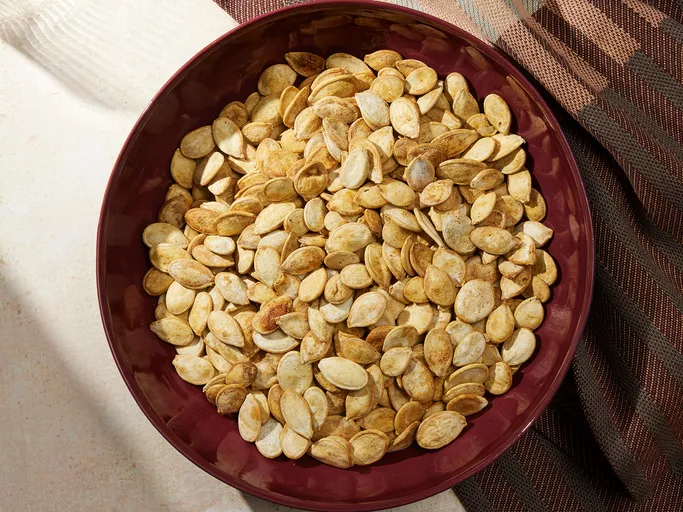

Spiced Pumpkin Seeds

Description
These pumpkin seeds make a perfect and easy snack. They taste wonderful and are healthy.
Takes about an hour to make and will yield about 2 cups of them. You can either double
up the recipe and make more or drop it down to one cup if it's your first time.
Ingredients
Seeds
- 1 ½ tablespoons margarine, melted
- ½ teaspoon salt
- ⅛ teaspoon garlic salt
- 2 teaspoons Worcestershire sauce
- 2 cups raw whole pumpkin seeds
Super simple steps are as follows:
- Gather the ingredients.
- Preheat oven to 275 degrees F (135 degrees C).
- Combine the margarine, salt, garlic salt, Worcestershire sauce and pumpkin seeds.
- Mix thoroughly and place in shallow baking dish.
- Bake for 1 hour, stirring occasionally.
- Let cool and enjoy!
Link to original recipe